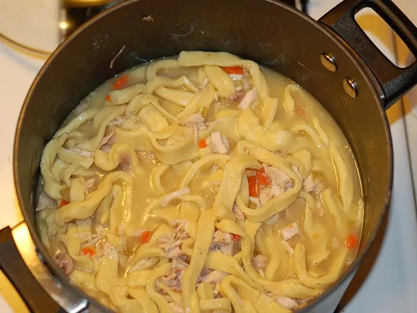

Фото: Bruin from Columbus, Ohio, U.S.A., CC BY 2.0
.jpg){kind=link}
Суп с домашней лапшой токмач
Татарский куриный суп с тонкой домашней яичной лапшой
100 мин6 порц.451 ккал на порциюБ 32 · Ж 25 · У 25Татарская кухня
Продукты на 6 порц.
- Курица целая1 шт
- Вода3 л
- Лук репчатый1 шт
- Картофель по желанию2 шт
- Лавровый лист1 шт
- Соль2,5 ч. л.
- Перец чёрный молотый1 щеп.
- Мука пшеничная1,25 стак.
- Яйцо куриное1 шт
- Укроп0,5 пучка
Как готовить
- Курицу залейте 3 л холодной воды, доведите до кипения на сильном огне и снимите пену. Добавьте целую луковицу, убавьте огонь до слабого и варите 1 час.
- Для лапши смешайте яйцо, 50 мл воды и щепотку соли, всыпьте муку и замесите очень крутое тесто. Оставьте на 20 минут.
- Раскатайте тесто как можно тоньше, до 1 мм, и подсушите на столе 15 минут, переворачивая.
- Сверните пласт рулетом и нарежьте тонкими полосками 2-3 мм. Встряхните, чтобы лапша рассыпалась.
- Выньте курицу и лук. Мясо отделите от костей и порежьте. Посолите бульон, положите лавровый лист и картофель кубиками, варите 10 минут.
- Всыпьте лапшу и варите 3-5 минут после всплытия, пока она не станет мягкой.
- Верните мясо, добавьте рубленый укроп и перец, выключите огонь.
Совет. Лапшу можно наделать впрок: хорошо высушенная, она хранится в банке несколько недель. Для ребёнка 3 лет не добавляйте перец и солите меньше.